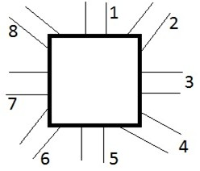

Dati generali
Questi campi vengono salvati sul dispositivo e riutilizzati automaticamente per tutte le schede, finché non li modifichi o li cancelli.
Dati scheda
Dati relativi al manufatto rilevato
Chiusino
Banchina
Torrino
Pozzetto
Condizioni / note
Condotte presenti
| ID schema | Tipologia | Profondità (m) | Diametro (mm) | Larghezza (cm) | Altezza (cm) | Materiale | Sezione | Colore |
|---|
Profondità: usa il punto (es. 1.20). Non usare la virgola (,).